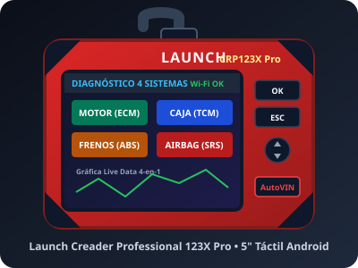

Top Taller Pro
Launch CRP123X Pro
Cobertura amplia de 4 sistemas (Motor, Transmisión, ABS, Airbags) y Wi-Fi de por vida.
- Diagnóstico profundo de transmisión TCM.
- Pantalla táctil IPS 5" HD + teclado.